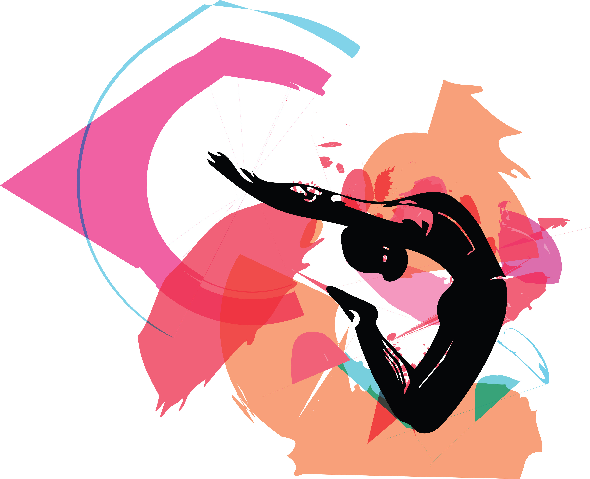
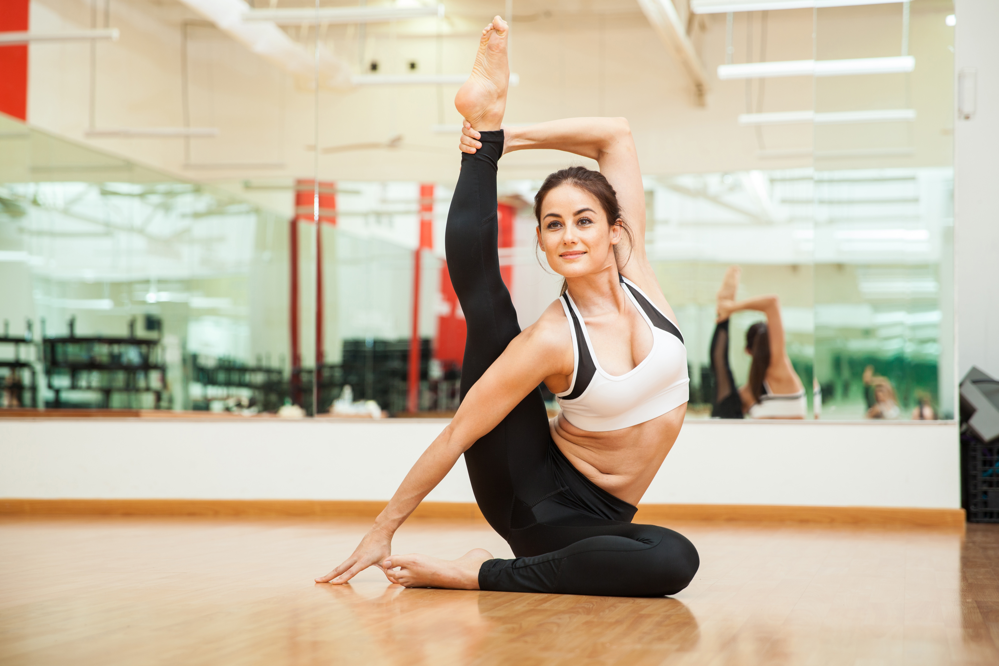
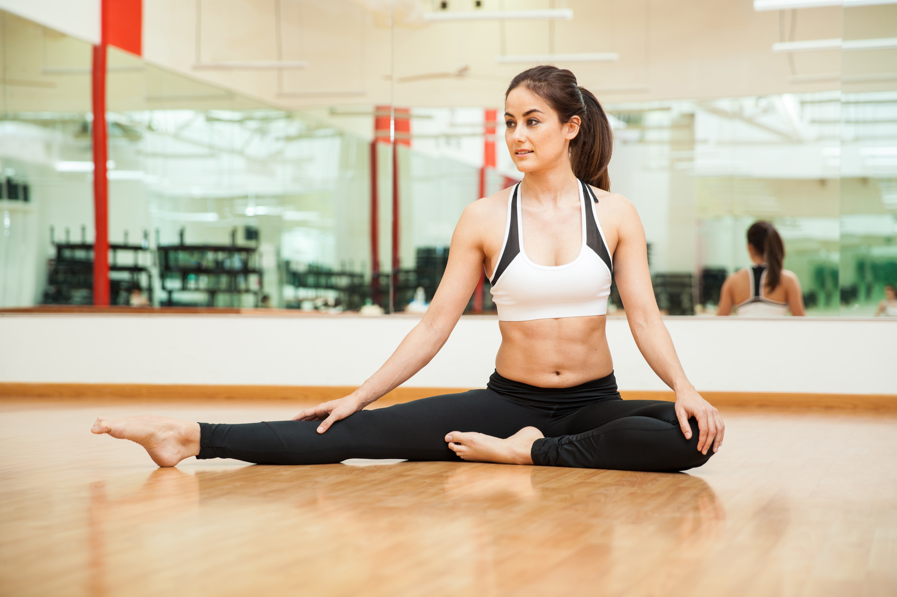
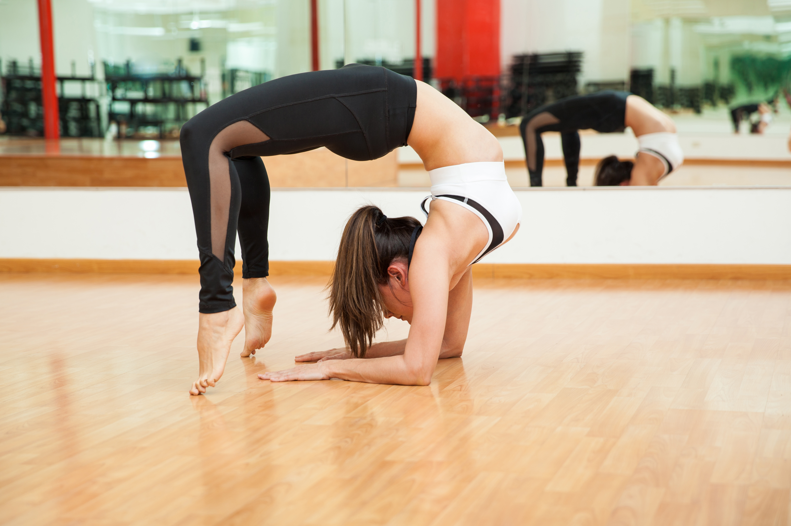
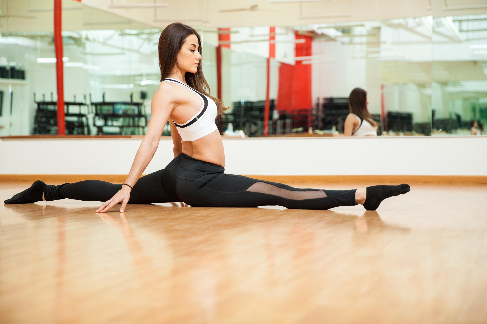
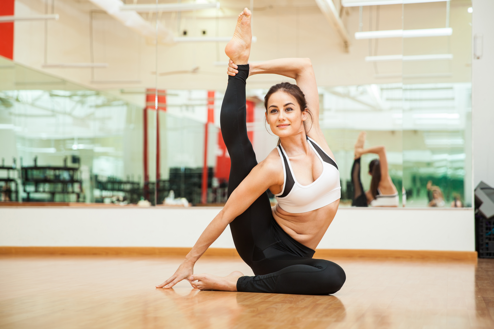
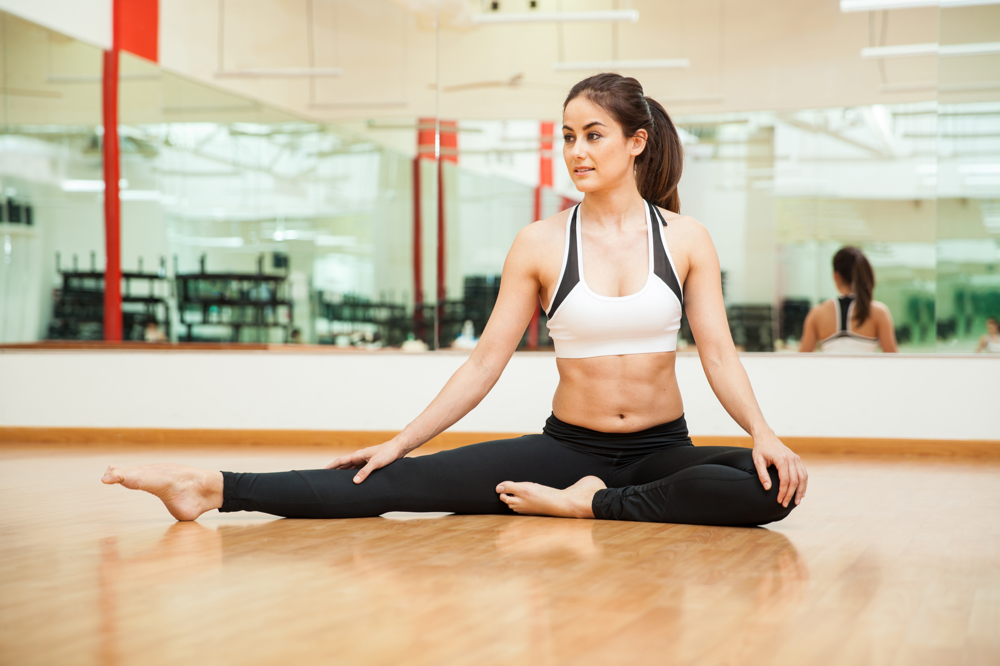
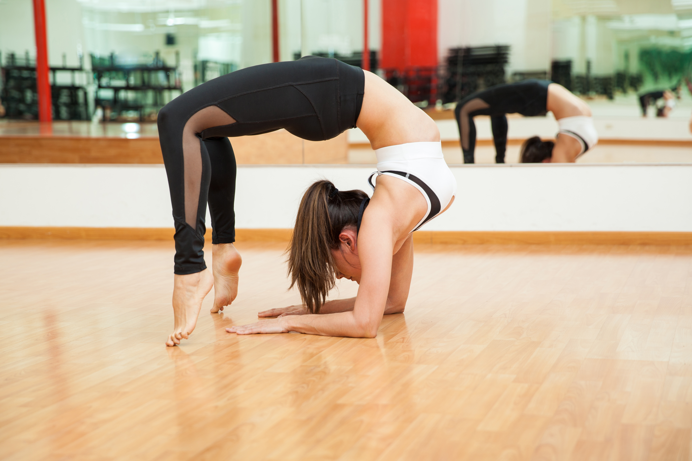
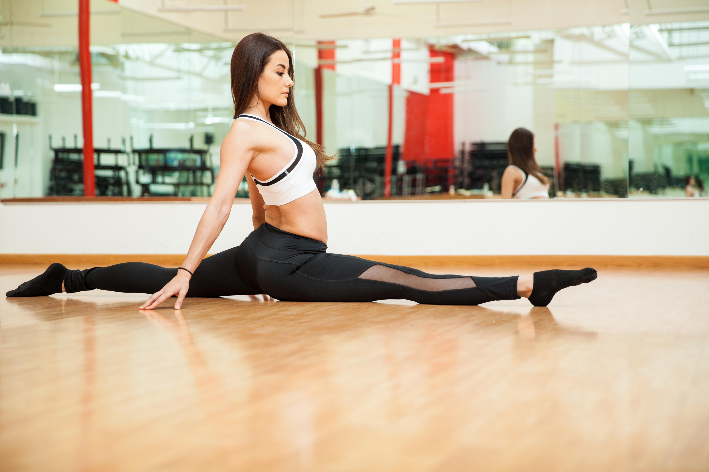

ABOUT
WHAT IS FLEXTIONARY?

Flextionary is an innovative online resource dedicated to enhancing flexibility and stretching techniques for individuals of all fitness levels. This comprehensive platform offers a rich repository of information, including detailed guides, video tutorials, and expert advice on various stretching exercises and flexibility routines. Flextionary is designed to be a user-friendly and comprehensive resource for anyone looking to incorporate stretching and flexibility into their fitness regimen, offering the knowledge and tools needed to improve overall physical health and wellness.
In addition to exercises and tutorials, Flextionary provides a wealth of expert advice and educational content. The platform hosts a variety of articles written by fitness experts, physical therapists, and wellness professionals. These articles cover a broad range of topics, from the benefits of regular stretching to common mistakes to avoid and tips for integrating flexibility practices into daily life. This content is designed to educate users, empowering them with the knowledge they need to make informed decisions about their fitness and wellness routines.
Flextionary also places a strong emphasis on community and support. The platform includes forums and discussion groups where users can connect with others who share similar goals. This sense of community is a key element of the Flextionary experience, providing users with encouragement, motivation, and the opportunity to share their progress and challenges.
Check out tutorials:
CLICK HERE
WHAT IS ACTIVE FLEXIBILITY?
Active flexibility is the ability to move muscles and joints through their full range of motion with control and strength. Unlike passive flexibility, which involves holding a stretch with the help of an external force (such as a partner or gravity), active flexibility relies on the individual's muscle strength to achieve and maintain the position. This type of flexibility is crucial for athletes, dancers, and anyone looking to improve their overall physical performance and prevent injuries. Exercises that enhance active flexibility include dynamic stretches such as leg swings, arm and body.
Active flexibility is a key component of physical fitness, referring to the capacity to move muscles and joints through their full range of motion while maintaining control and strength. This type of flexibility is distinct from passive flexibility, where an external force—such as a partner, gravity, or an apparatus—assists in holding a stretch. In contrast, active flexibility relies entirely on the individual's own muscle power to reach and sustain the desired position.
Exercises that develop active flexibility often involve dynamic stretches, which are movements that take joints through their full range of motion. Examples include leg swings, where the leg is swung forward and backward to stretch the hamstrings and hip flexors, and arm swings, which help to loosen up the shoulders and upper back. These exercises are typically performed in a controlled manner, with an emphasis on smooth, deliberate movements rather than forceful or jerky actions. It allows for greater agility and the ability to perform more complex movements with ease and precision. Whether you're aiming to improve your performance in sports, dance, or everyday activities, focusing on active flexibility can lead to noticeable improvements in your overall physical capabilities.
For more information:
CLICK HERE
 






